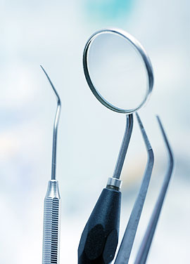

23
OCT, 2015
Enjuagues blanqueadores
Como la mayoría de los enjuagues grupales,
los enjuagues de blanqueamiento refrescan
el aliento y ayudan a reducir la placa dental y
la enfermedad en las encías

06
OCT, 2015
Manchas en los dientes
Aprenda a usar la colección Crest 3D white
para blanquear, limpar y proteger sus dien-
tes para una sonrisa que se destaca

17
OCT, 2015
Blanqueamiento en el hogar
Los blanqueadores que contienen peróxido
vienen tipicamente en un gel y se colocan en
una bandeja que cabe en sus dientes

30
OCT, 2015
Efectos secundarios
Algunas personas pueden encontrar que sus
dientes se vuelven sensibles al frío durante o
después del tratamiento